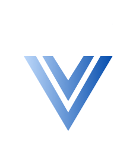
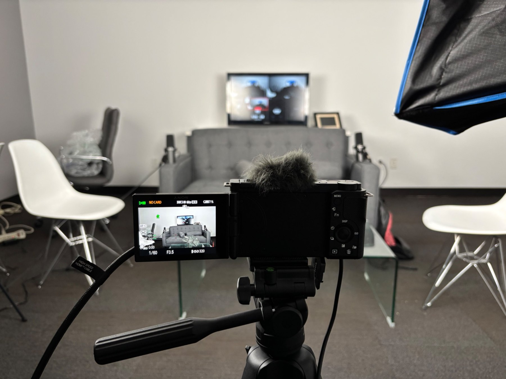
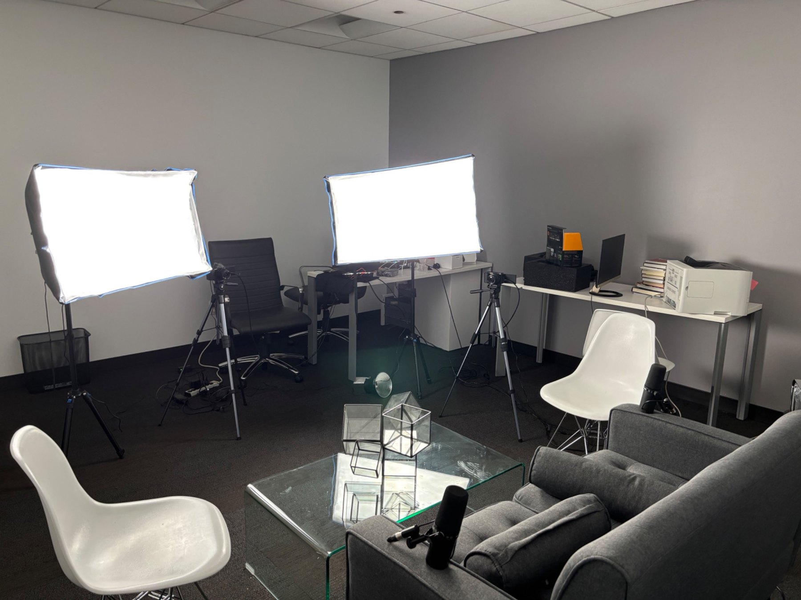
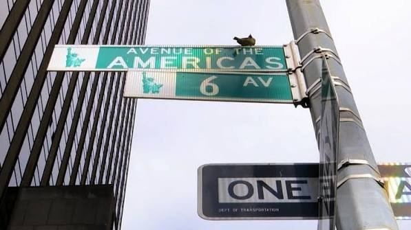
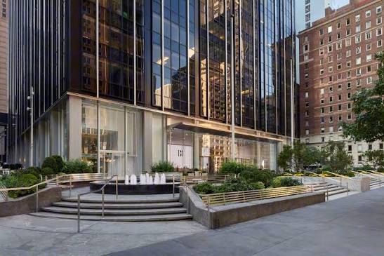

Podcast Recording
Record high-quality podcasts, interviews, guest conversations, and recurring shows in Midtown Manhattan.

Podcast StudioVIRGO Business Centers · Midtown Manhattan
A professional podcast, video, and comedy clipping studio inside VIRGO Business Centers at 1345 Avenue of the Americas.

Record podcasts, interviews, brand content, and stand-up comedy clips in a clean Midtown space backed by the professionalism of VIRGO Business Centers.
Inside the Studio
The studio is designed for podcast recording, video interviews, comedy routines, social clips, and business content in a setting your guests will take seriously.

Studio Equipment
Professional recording tools without the stress of building a studio yourself.
Broadcast-style microphones for clean podcast and comedy vocals.
Sharp video for interviews, routines, and short-form content.
Professional audio capture and simple recording workflow.
Multi-camera switching for a polished video podcast look.
Soft lighting designed to make subjects look clean on camera.
Recordings can be prepared for full episodes and social clips.
Services
Record high-quality podcasts, interviews, guest conversations, and recurring shows in Midtown Manhattan.
Create polished video podcasts with camera angles, lighting, microphones, and a credible studio look.
Record and clip stand-up routines, sets, crowd work, and joke rehearsals for social media and promo reels.
Turn long-form conversations or comedy sets into short-form content for Instagram, TikTok, YouTube Shorts, and LinkedIn.
Location
VIRGO Podcast Studio is located inside VIRGO Business Centers in Midtown Manhattan, near Rockefeller Center, Bryant Park, Times Square, Grand Central, and major subway lines.
The location is convenient for founders, executives, agencies, consultants, creators, comedians, and teams looking for a professional Manhattan recording space.


Booking
Use the booking link to reserve through VIRGO Business Centers, or contact us for podcast recording, editing, comedy clips, or custom content packages.
Inquire
Book
Custom
Studio Gallery
FAQ
VIRGO Podcast Studio is located at 1345 Avenue of the Americas, 2nd Floor, New York, NY 10105.
Yes. The studio is built for video podcast recording with cameras, lighting, microphones, and a multi-camera workflow.
Yes. Comedians can record stand-up routines, joke rehearsals, crowd work, and short-form comedy clips for social media, submissions, and promo reels.
Yes. Editing and short-form clips can be discussed depending on the recording and final deliverables you need.
Use the Book Now button to reserve through VIRGO Business Centers, or email us directly with questions.
Ready to Record?
Reserve your studio time through VIRGO Business Centers or contact us for help planning your podcast, video, or stand-up comedy recording.
VIRGO Podcast Studio · 1345 Avenue of the Americas, 2nd Floor · New York, NY 10105 · +1 (212) 601-2700